Reader · design mock-ups
A figure, close up
The Explain page draws a small figure beside each paragraph. Click one and it lifts off the page to the middle of the window, as large as the window allows, growing from where it sits; the page dims behind it and stays put. Tab goes on to the next figure, Esc puts it back where it came from. A scene opens the same way, on its step.
The pictures of the design as built are photographs of the app, taken by its smoke test on Attention Is All You Need. The alternatives below them are frames of a mock-up in the reader's own colours and type. The design note is in the reader's repository under docs/explain-closeup.md.
▶ See the alternatives in the mock-up · expand in place, a peek on hover, a pinned pane, zoom inside the close-up
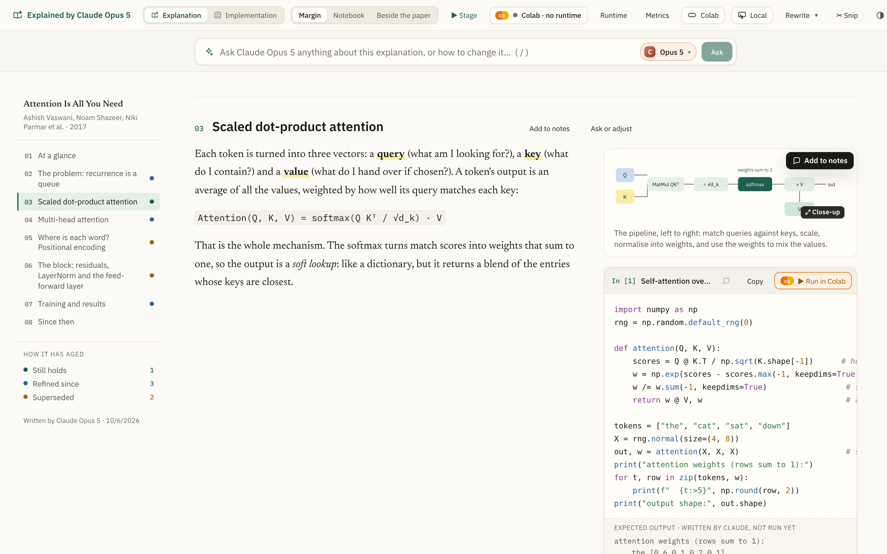
It says it can be looked at closer
The pointer over a figure is a magnifier, and a small ⤢ Close-up mark comes up on its corner. The figure is focusable too, so ⇥ reaches it and ↵ opens it.
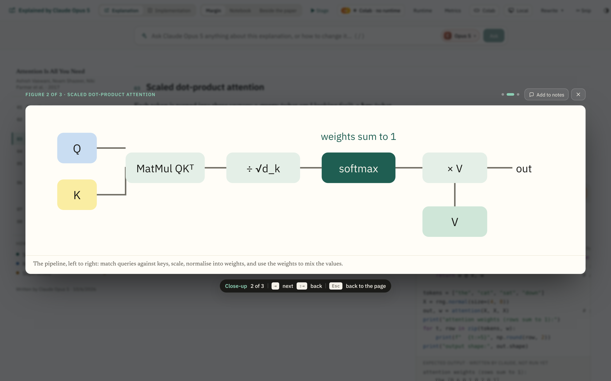
Click, and it grows from where it is
The drawing goes to the middle of the window from its place in the margin, growing as it goes, so the eye follows it and knows where it will return to. Figures are SVG, so the close-up is the same drawing set larger: the type stays sharp. Over it, which figure this is and whose section; under it, the caption; under that, the keys.
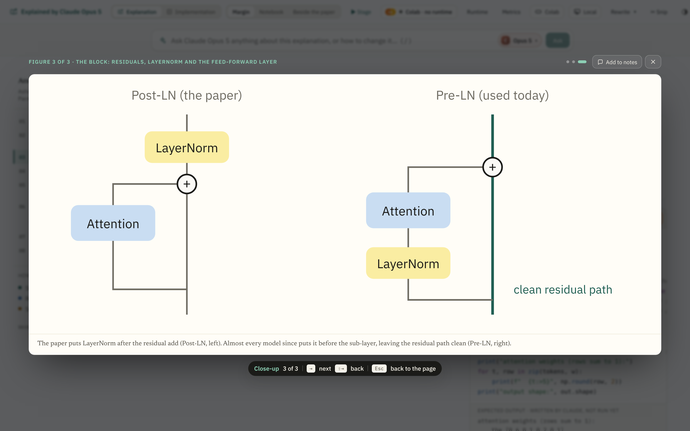
Tab goes on, Esc goes back
⇥ and the arrows go on to the next figure on the page, ⇧⇥ back, and the dots say where you are among them. Esc, the ×, or a click beside the card shrinks it back to where it came from; the focus goes back to the drawing. Add to notes keeps it, as the corner button on the page does.
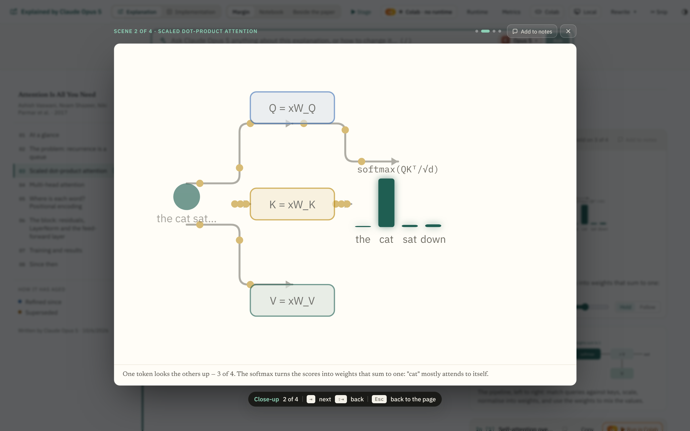
A scene, on its step
A scene opens the same way, as a still of the step it is on, in its own colours, with the scene's title and the step's caption under it.
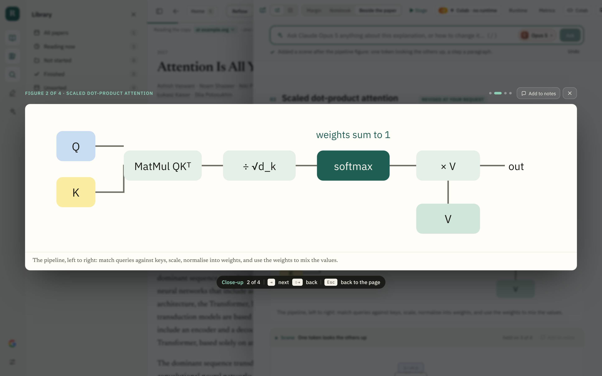
Every layout
In the Notebook and Beside-the-paper layouts the close-up takes the whole window too, over the paper as well as the explanation.
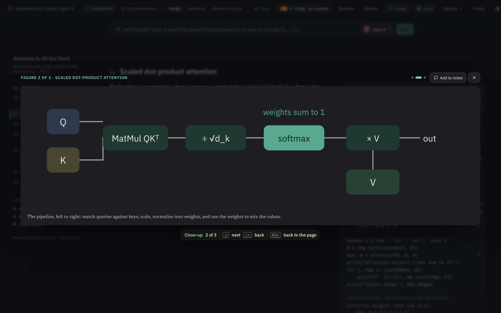
In the dark
The dark theme has its own ground; the figure is drawn in the dark palette it has on the page.
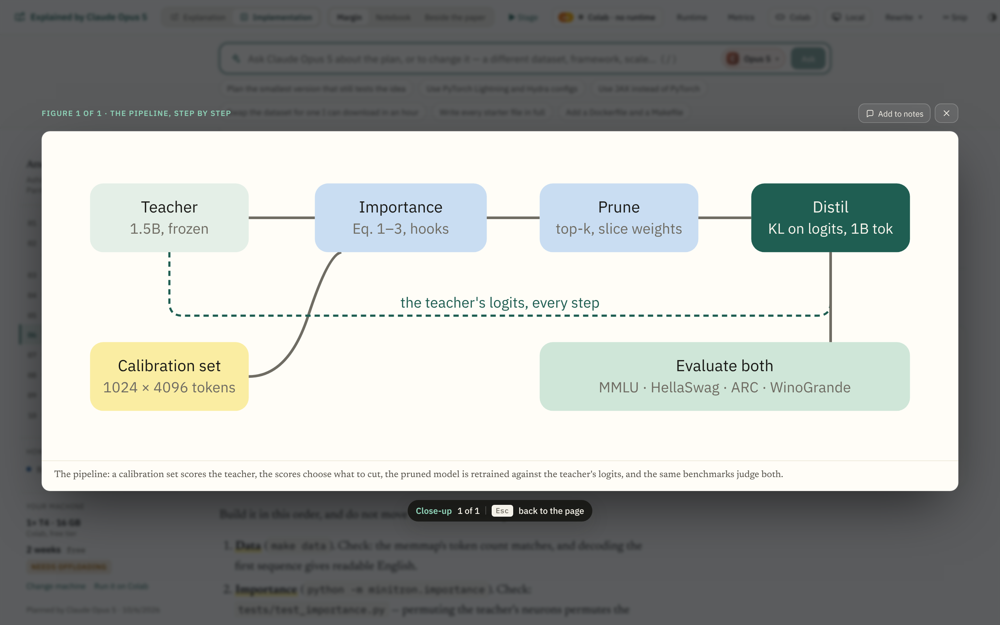
The Implementation page too
The plan's figures open the same way.
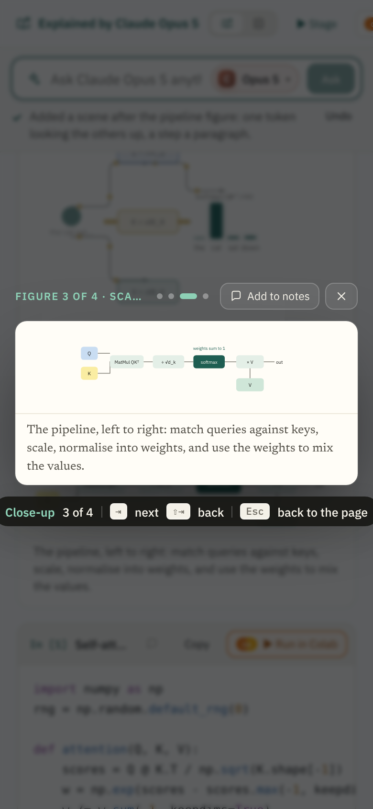
On a phone
The card fills the width with a small gutter; the chip is left out, since there are no keys; a tap beside the card closes it.
The options considered
Four other ways of seeing a figure larger were mocked up and set aside. Each frame carries the reason on a yellow note; the mock-up itself switches between them.
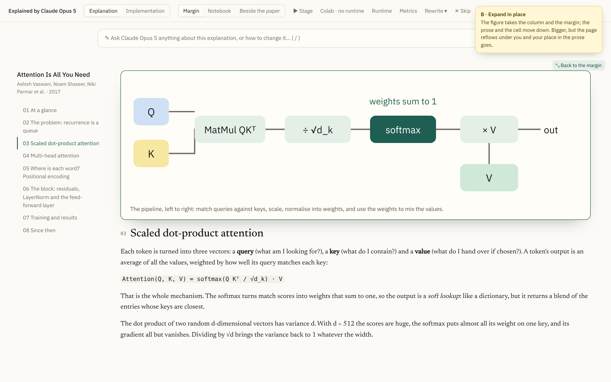
Expand in place
The figure widens across the reading column and the margin; the prose and the cell move down. Bigger, but the page reflows under you and your place in the prose goes, and the width it can take is the column's, not the window's.
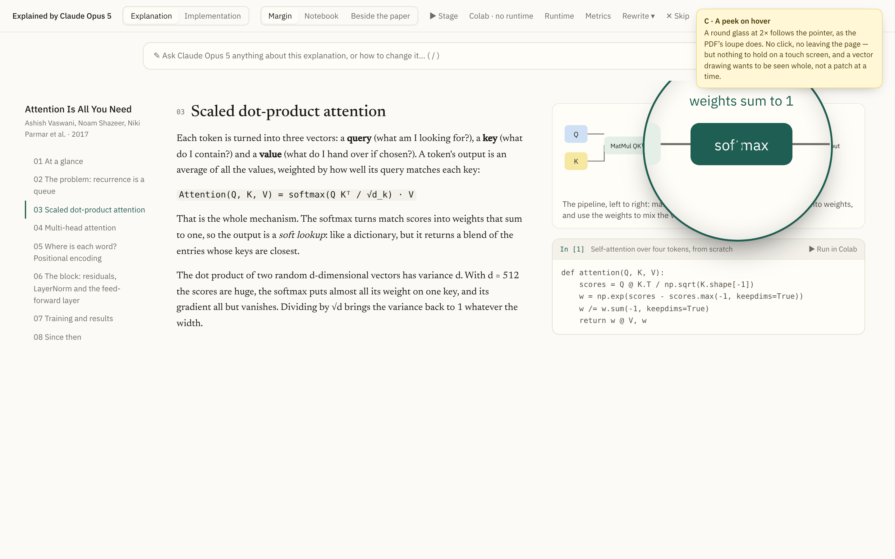
A peek on hover
A round glass at 2× follows the pointer, as the PDF's loupe does. No click, no leaving the page — but a vector drawing wants to be seen whole, not a patch at a time, and there is nothing to hold on a touch screen.
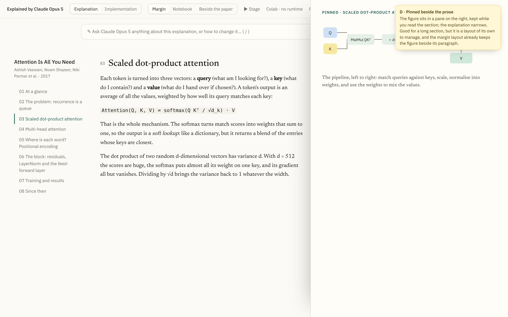
Pinned beside the prose
The figure sits in a pane on the right, kept while you read the section. Good for a long section, but a fourth layout to manage; the Margin layout already keeps the figure beside its paragraph. Could come later as a Pin on the close-up.
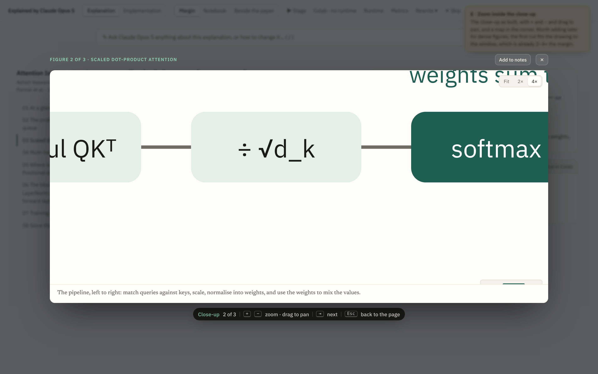
Zoom inside the close-up
The close-up as built, with + and −, drag to pan, and a map in the corner. Worth adding when a figure is dense enough to need it; the first cut fits the drawing to the window, already two to four times the margin.